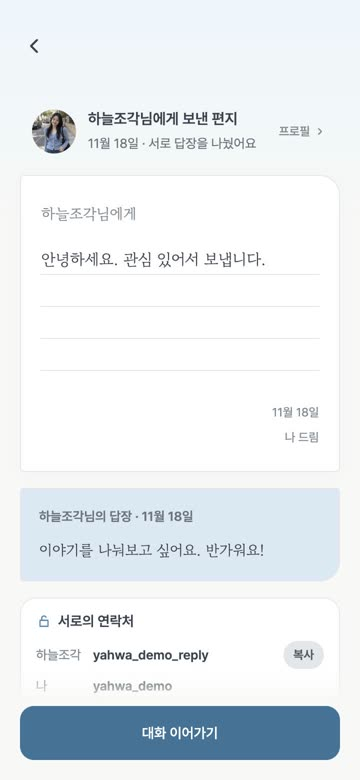
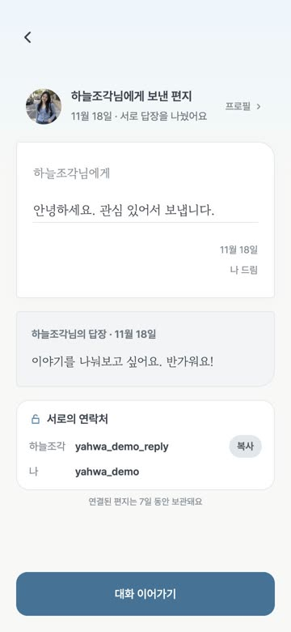
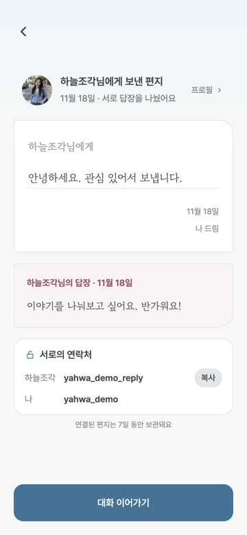
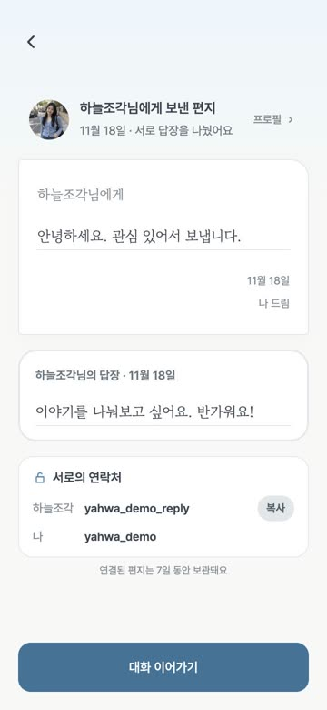

답장 온 편지 · 답장 상자 색
- A · B · C 모두 같이 고친 점: 편지지가 글 길이와 상관없이 빈 줄 4개를 깔고 있어서, 짧은 편지도 카드가 길었어요. 글만큼만 줄을 그어요.
- 그래서 아래 연락처 카드의 "나" 줄과 "연결된 편지는 7일 동안 보관돼요"가 "대화 이어가기" 버튼에 가려지지 않고 다 보여요.

지금연한 하늘(sky-100) 상자 · 편지지 빈 줄 4개

A뉴트럴 · cool-neutral-50. 색 없이 편지 · 연락처와 한 결

B연한 장미 · 서로 답장을 나눈 순간이라 장미 포인트(홈 "서로 연결됨"과 같은 결), 제목만 진한 장미

C두 번째 편지지 · 흰 카드 + 얇은 선, 답장 글도 편지처럼 고운바탕 · 줄 노트